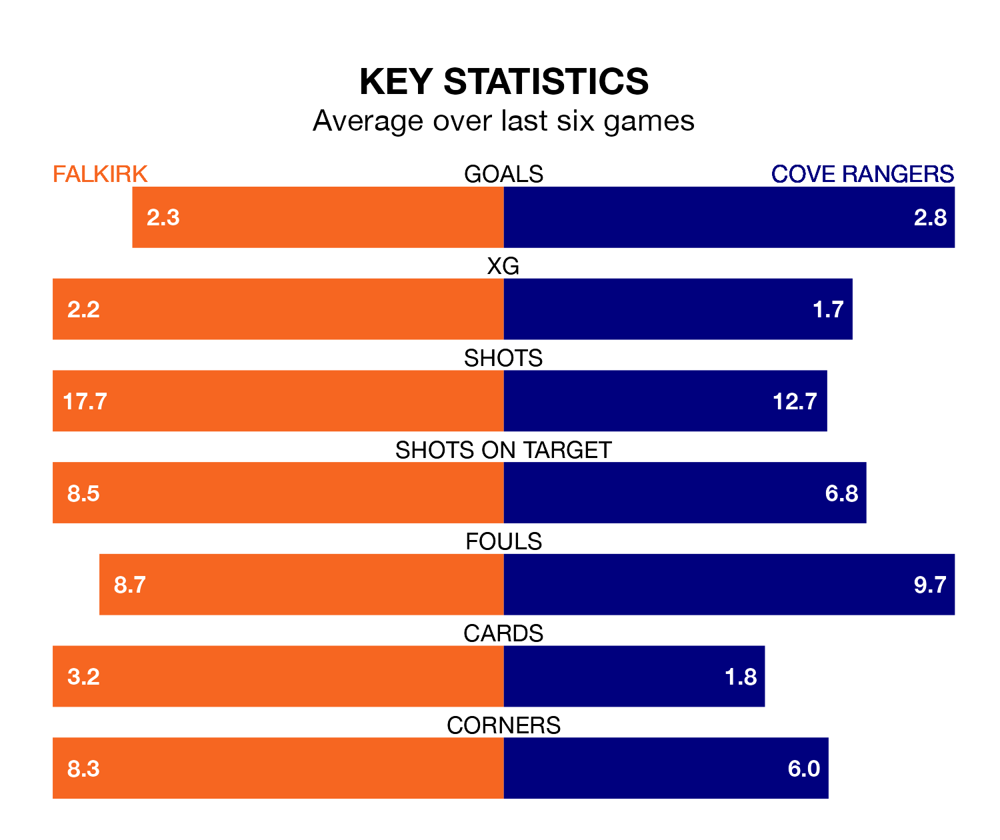

Two of League One's top sides face each other at the Falkirk Community Stadium in Tuesday's late kick-off, when table-topping Falkirk host third-placed Cove Rangers.
Falkirk have picked up 15 wins and four draws from 19 games so far this season, and sit 16 points above the visitors going into the 7.45pm match.
The Wee Rangers, meanwhile, have won nine and drawn six, picking up 33 points.
With 45 goals in 19 games so far this season, Falkirk are the league's highest scorers with 2.4 goals per game. And they are conceding fewer than average, letting in 11 goals at a rate of 0.6 per game.
Cove are also above average scorers, with 1.9 goals per game, compared to a league average of 1.5. They have conceded 1.2 goals per game.
In Rumarn Burrell, Rangers have the league's most on-form striker so far this season. He has notched 17 goals in 19 appearances.
The Bairns's top scorers, with nine goals each, are Callumn Morrison and Ross MacIver.
The home team are in fantastic form in League One, with five wins and a draw from their last six games.
With three wins and two draws over that period, the Wee Rangers' form is worse – they have taken 11 points from 18, compared to Falkirk's 16.
Over the last two years, Falkirk and Cove have played each other on three occasions. Cove won two of them and they drew once.
Their last meeting was on August 12, when they played out a 2-2 draw.
Falkirk's last match was on Saturday, a 1-0 win against Queen of the South, with Aidan Nesbitt getting the goal for the Bairns.
Cove drew 2-2 with Kelty Hearts last time out, also on Saturday, with Burrell and Mitchel Megginson on the scoresheet.
Tuesday's match will be refereed by Craig Napier, who has taken charge of four League One games so far this season, issuing one red card and booking four players. He has awarded two penalties.
The last Falkirk game Napier refereed was a 5-0 home win against Stirling Albion on December 30. His last Cove match was their 2-2 draw away at Stirling Albion on September 30.
Updated: 11:31, 09/01/24